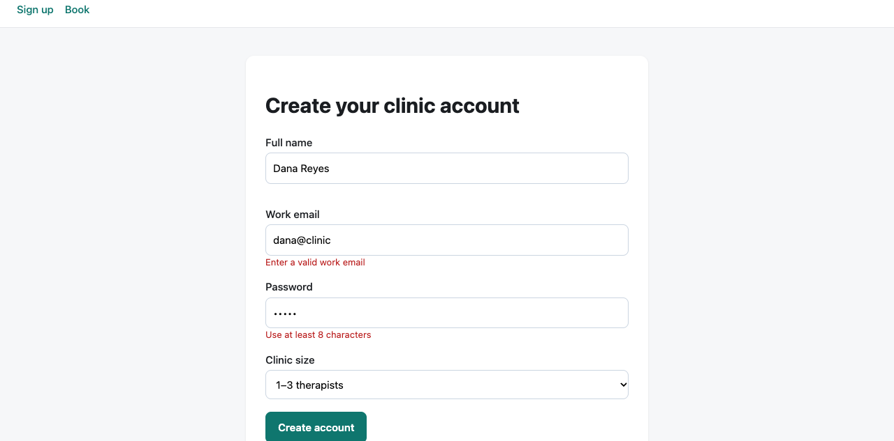
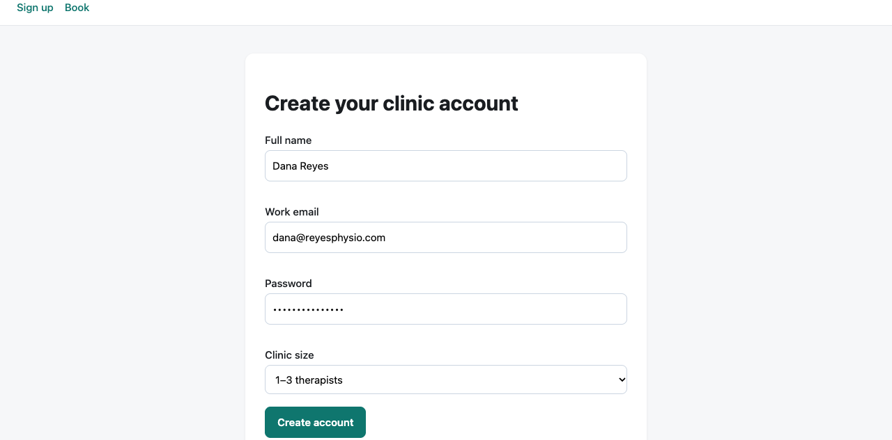

Output


Result
browser-1 (signup flow)
Submitting "dana@clinic" with a 5-character password: the form stays put, the inline errors "Enter a valid work email" and "Use at least 8 characters" appear, the name error is empty and no success box is rendered. Submitting dana@reyesphysio.com with a valid password: all three error slots are cleared and a role=status box reads "Account created for dana@reyesphysio.com. Check your inbox." Network log shows no request other than the page load, so signup is purely client-side: nothing is sent to a server, the "account" is never persisted.
Tool: agent-browser 0.39.1 (npm i agent-browser in scratch, native CLI, drives the system Chrome; no swap needed). Followed the real SKILL.md (a stub that says to run `agent-browser skills get core`) and that core guide: own named session, snapshot -i then @eN refs, semantic `find` locators, wait for text instead of fixed sleeps, `errors`/`network requests` for evidence, close at the end. Server: python3 -m http.server on port 7111, killed afterwards.
Friction observed: refs are not stable across navigation (open re-numbers them: after re-opening, @e4 -> @e15 -> @e25), so a ref taken from an old snapshot gave "Unknown ref"; I switched to `find label/role ... ` which worked every time. Plain-text `errors` printed an empty "✗" line for the page error; `errors --json` gave the real message and stack (index.html:51:98). `errors --clear` did not drop the earlier TypeError from the buffer in the control run, so that line is stale, not new.
Terminal
# SKILL.md is a stub; the real workflow is served by the CLI
agent-browser skills get core # (after reading the SKILL.md stub that points to it)
---
name: core
description: Core agent-browser usage guide...
# core loop: open -> snapshot -i -> click @eN -> re-snapshot; 'Always use your own session'; 'Waiting (read this)': prefer wait --text/--url/--fn over networkidle or fixed delays
# named session per the skill; local server on 7111
export AGENT_BROWSER_SESSION="$(agent-browser session id --scope worktree --prefix task)"; agent-browser open http://localhost:7111/index.html
[agent-browser] launched browser
✓ Tidewater – test app
http://localhost:7111/index.html
agent-browser snapshot -i
- link "Sign up" [ref=e1]
- link "Book" [ref=e2]
- heading "Create your clinic account" [level=1, ref=e3]
- textbox "Full name" [ref=e4]
- textbox "Work email" [ref=e5]
- textbox "Password" [ref=e6]
- combobox "Clinic size" [expanded=false, ref=e7]: 1–3 therapists
- button "Create account" [ref=e8]
# refs get renumbered on every navigation/snapshot (the new snapshot had e15/e16/e17/e19); I switched to semantic find locators
agent-browser fill @e4 "Dana Reyes" # after re-opening the page
✗ Unknown ref: e4
# browser-1, invalid case
agent-browser find label "Full name" fill "Dana Reyes"; agent-browser find label "Work email" fill "dana@clinic"; agent-browser find label "Password" fill "short"; agent-browser find role button click --name "Create account"; agent-browser wait 300; agent-browser screenshot out/browser-1-invalid.png
for s in e-name e-email e-pw; do agent-browser get text "#$s"; done; agent-browser get count ".ok"
✓ Done (x4)
✓ Screenshot saved to out/browser-1-invalid.png
e-name:
e-email: Enter a valid work email
e-pw: Use at least 8 characters
ok boxes: 0
# browser-1, valid case; wait --text instead of a sleep
agent-browser find label "Work email" fill "dana@reyesphysio.com"; agent-browser find label "Password" fill "correct-horse-9"; agent-browser find role button click --name "Create account"; agent-browser wait --text "Account created"; agent-browser get text "#result"
✓ Done (x3)
Account created
Account created for dana@reyesphysio.com. Check your inbox.
# only page loads: no signup request was sent
agent-browser network requests | grep -v favicon
[C227A60F...] GET http://localhost:7111/index.html (Document) 200
[8ED57E06...] GET http://localhost:7111/index.html (Document) 200
[71B5CD8B...] GET http://localhost:7111/index.html (Document) 200
agent-browser close; pkill -f 'http.server 7111'
✓ Browser closed
Files
flow (shell, as run)
export AGENT_BROWSER_SESSION=class="s">"$(agent-browser session id --scope worktree --prefix task)" agent-browser open http://localhost:7111/index.html agent-browser find label class="s">"Full name" fill class="s">"Dana Reyes" agent-browser find label class="s">"Work email" fill class="s">"dana@clinic" agent-browser find label class="s">"Password" fill class="s">"short" agent-browser find role button click --name class="s">"Create account" agent-browser screenshot out/browser-1-invalid.png for s in e-name e-email e-pw; do agent-browser get text class="s">"#$s"; done agent-browser find label class="s">"Work email" fill class="s">"dana@reyesphysio.com" agent-browser find label class="s">"Password" fill class="s">"correct-horse-9" agent-browser find role button click --name class="s">"Create account" agent-browser wait --text class="s">"Account created" agent-browser open class="s">"http://localhost:7111/index.html#book" agent-browser find role button click --name class="s">"Book appointment" agent-browser errors --json echo class="s">'typeof selected' | agent-browser eval --stdin agent-browser find text class="s">"10:30" click agent-browser find role button click --name class="s">"Book appointment" agent-browser network requests agent-browser close